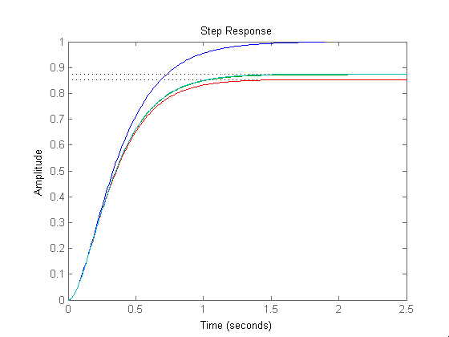
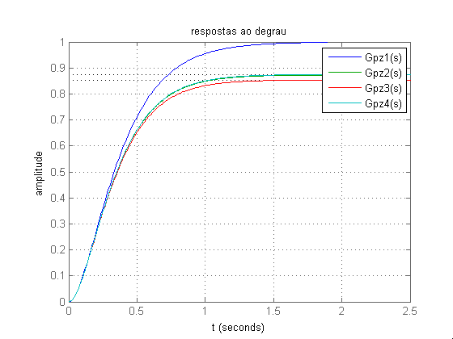

sobre
- Autor: Jonas Vieira de Souza
- Data: 11/09/2018
- Objetivo: Comparar respostas ao degrau
Contents
configurações iniciais
...
close all; clear; clc; s = tf('s');
Gpz1(s), Gpz2(s), Gpz3(s) e Gpz4(s)
...
num = 26.25*(s + 4); % Gpz1(s) den = (s + 3.5)*(s + 5)*(s + 6); % polo em -3.5 step(num/den); hold on % Gpz2(s) den = (s + 4.01)*(s + 5)*(s + 6); % polo em -4.01 step(num/den); hold on % Gpz3(s) den = (s + 4.1)*(s + 5)*(s + 6); % polo em -4.10 step(num/den); hold on % Gpz4(s) num = (26.25); den = (s + 5)*(s + 6); % polo em -4.00 step(num/den);
configurações finais
...
title('respostas ao degrau'); xlabel('t'); ylabel('amplitude'); legend('Gpz1(s)', 'Gpz2(s)', 'Gpz3(s)', 'Gpz4(s)'); grid on; hold off;